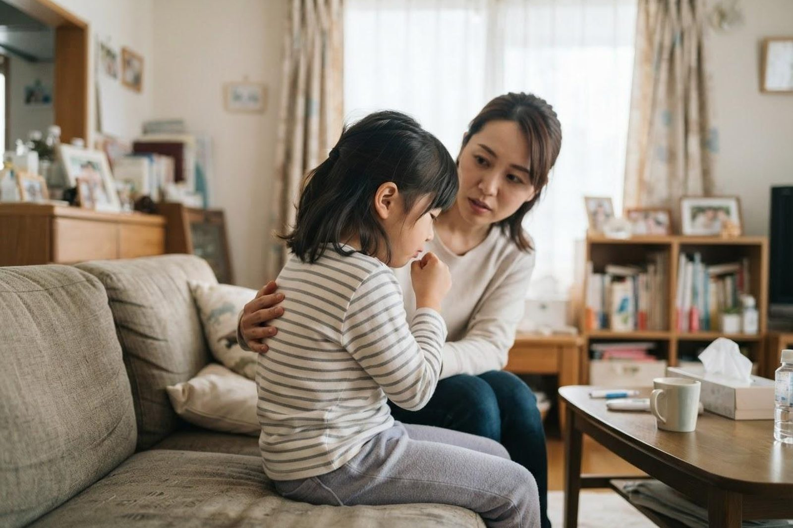

子どもの咳が続いています。ゼーゼーいうこともあるのですが、受診の目安はありますか？
A. 回答子どもの咳の多くはかぜなどの感染症に伴うもので、時間とともに落ち着いていくことが多いとされています。ただし「ゼーゼー」「ヒューヒュー」という音（喘鳴）を伴うときは、空気の通り道である気道が狭くなっているサインと考えられており、注意が必要です。判断のいちばんの目安は咳の回数よりも呼吸のしかたと全身の様子です。呼吸が苦しそう、顔色が悪い、水分がとれない、ぐったりしているといった場合は、夜間・休日であっても急いで受診をご検討ください。日中の受診で間に合いそうかどうか迷うときは、こども医療でんわ相談（＃8000）でも相談できます。

受診の目安（いちばん大切なところ）
お子さんの咳では、「どのくらい咳をしているか」よりも「呼吸がどのくらいつらそうか」を見ていただくことが大切とされています。次のような様子があるときは、夜間や休日であっても急いで受診・救急要請をご検討ください。
夜間・休日にお子さまのことで迷われるときは、こども医療でんわ相談「＃8000」（岡山県）にご相談いただけます。日本小児科学会の「こどもの救急」も目安になります。
すぐに受診を検討してください（夜間・休日でも）
- 呼吸が苦しそう：小鼻がピクピクと開く（鼻翼呼吸）、肩を上下させて息をする、息を吸うときに肋骨の間やのどの下がへこむ（陥没呼吸）
- 顔色や唇の色が悪い：唇や爪、顔色が青白い・紫がかっている
- 犬が吠えるような咳（ケンケンという咳）で息が吸いにくい：声がかすれ、息を吸うときにヒューという音がする場合はクループ（喉頭の腫れ）が疑われることがあります
- 突然の激しい咳込みが始まった：豆・ナッツ類や小さなおもちゃなどを口にした直後であれば、異物の誤嚥（ごえん）の可能性があります
- ゼーゼーが強く、横になれない・前かがみで座り込んでしまう
- 咳き込みで水分がとれない、ぐったりしている、呼びかけへの反応が鈍い
- けいれんがある、呼吸が一時的に止まる様子がある
早めの受診をおすすめします（診療時間内に）
- ゼーゼー・ヒューヒューという音が続いている、または繰り返している
- 咳で夜中に何度も目を覚ます、眠れない日が続いている
- 咳が2〜3週間以上続いている
- 走ったあとや冷たい空気を吸ったときに咳き込みやすい
- 発熱が続く、呼吸が普段より速い、食欲が落ちている
- 黄色い鼻水や鼻づまりが長引き、あわせて咳や咳払いが続いている
- 生後まもない赤ちゃんで、咳やゼーゼー、母乳・ミルクの飲みが悪い様子がある
「呼吸が苦しい」を見分けるチェックリスト
お子さんは自分で「苦しい」とうまく伝えられないことがあります。服をめくって胸やおなかの動きを見ていただくと、様子がつかみやすくなります。
こんな様子はありませんか？
- 息を吸うたびに、肋骨の間やみぞおち、のどの下がへこむ
- 小鼻がピクピクと動いている
- 肩を大きく上下させて息をしている
- 普段より呼吸が明らかに速い、浅い
- 唇や爪の色が悪い、顔色が青白い
- 会話や授乳が息継ぎで途切れてしまう
- 眠れない、横になると苦しがる
ひとつでも当てはまる場合は、様子を見ずに受診をご検討ください。特に上の3つは気道が狭くなっているときに現れやすいとされるサインです。
子どもの咳・ゼーゼーの背景にあるもの
子どもの咳やゼーゼーには、次のような背景が関わっていることがあるとされています。年齢や季節、繰り返し方によって考えられるものが変わります。
- かぜなどのウイルス感染症：もっとも多い原因とされています。鼻水やのどの症状に続いて咳が出て、数日から1〜2週間ほどで軽くなっていくことが多いといわれています。
- 感染後咳嗽（かんせんごがいそう）：かぜ自体は治っているのに、気道が敏感な状態が残って咳だけが数週間続くことがあるとされています。
- 乳幼児のぜん息（気管支喘息）：ゼーゼー・ヒューヒューを繰り返す、夜間や早朝、運動後に悪化する、という特徴がみられることがあるとされています。小さなお子さんでは診断に時間をかけて経過をみることもあります。
- 細気管支炎：主に2歳未満のお子さんで、ウイルス感染により細い気道に炎症が起きてゼーゼーや呼吸の速さが出ることがあるとされています。月齢の低い赤ちゃんほど注意が必要とされています。
- クループ（急性喉頭炎）：生後6か月〜3歳ごろに多く、犬が吠えるような咳や声のかすれ、息を吸うときの音が特徴とされています。夜間に急に強くなることがあります。
- 副鼻腔炎・後鼻漏：鼻の奥の分泌物がのどに流れ込むことで、咳や咳払いが長引くことがあるとされています。
- 気道異物（誤嚥）：食べ物や小さな部品が気道に入ることで、突然の咳込みやゼーゼーが起こることがあります。急を要する場合があります。
- アレルギー性の要因：ダニ・ハウスダスト、花粉、受動喫煙などが咳を悪化させる要因になることがあると指摘されています。
咳の種類で分けて考えると整理しやすくなります
受診の際に、咳の「音」や「出る時間帯」を伝えていただくと役立ちます。あくまで目安ですが、次のように整理できます。
| 咳のようす | よくみられる状況 | 対応の目安 |
|---|---|---|
| コンコンと乾いた咳 | かぜの初期、感染後咳嗽など | 全身状態がよければ日中の受診で相談 |
| ゴロゴロ・湿った咳 | 痰や鼻水がからんでいるとき | 発熱や呼吸の速さがあれば早めに受診 |
| ゼーゼー・ヒューヒュー | 気道が狭くなっている状態。ぜん息や細気管支炎など | 繰り返すなら受診。苦しそうなら夜間でも受診 |
| ケンケン（犬が吠えるよう） | クループが疑われる状態。夜間に強くなりやすい | 息が吸いにくいときは急いで受診 |
| 突然の激しい咳込み | 異物の誤嚥の可能性 | 急いで受診・救急要請をご検討ください |
夜間・休日に迷ったときの相談先
「今すぐ病院に行くべきか、朝まで待てるか」の判断に迷ったときは、次の窓口をご利用いただけます。
- こども医療でんわ相談 ＃8000：全国共通の短縮番号で、お住まいの都道府県の相談窓口につながります。小児科の医師や看護師に、休日・夜間の対応について電話で相談できます（受付時間は都道府県によって異なります）。
- 「こどもの救急」（日本小児科学会 監修）：症状を選んでいくと、受診の目安の考え方が確認できるサイトです。
- ためらわず救急要請を：顔色が悪い、呼吸が止まりそう、意識がはっきりしないなど、明らかに緊急性が高いと感じる場合は119番をご利用ください。
相談の際は、月齢・年齢、体温、呼吸の速さや様子、水分がとれているか、いつから続いているかを手元にまとめておくと伝えやすくなります。
当院での対応と、受診の実務的なご案内
いなだ医院では、小児科・呼吸器内科・アレルギー科・感染症内科などを標榜しており、お子さんの咳やゼーゼーについてもご相談いただけます。診察では、聴診で呼吸の音を確認し、必要に応じてレントゲン検査や血液検査、感染症の検査などを行い、ぜん息やアレルギーの関与が疑われる場合には経過を含めて評価していきます。当院には発熱外来もあり、発熱を伴うお子さんの受診についてもご案内しています。
- 予約について：当日の受診が可能です。発熱を伴う場合や、症状が強い場合は、来院前に一度お電話（086-525-0600）でご連絡いただくとご案内がスムーズです。
- 診療時間：月〜土 7:00〜12:00 ／ 月〜金 14:30〜18:30（土曜の午後は17:30まで）。朝7時から診療していますので、夜間に咳込んで眠れなかった朝でも早い時間にご相談いただけます。
- 時間の目安：診察自体は数分〜10分程度、レントゲン検査を行う場合は撮影と説明を含めて20〜30分程度をみておいていただくと安心です。混雑状況により前後します。
- 費用について：診察・検査はいずれも保険診療の対象となります。お子さんの場合は自治体の小児医療費助成が適用されることがあります。詳しくはお問い合わせください。
- お持ちいただくもの：健康保険証（またはマイナ保険証）、医療費受給者証、母子健康手帳、他院からのお薬手帳。咳込んでいる様子を短い動画で撮っておいていただくと、診察時の参考になります。
- 駐車場：無料22台分をご用意しています。両備バス「西中学校前」から徒歩3分、ニシナ玉島柏島店の西隣りです。
受診時に伝えていただきたいこと
- 咳がいつから、どのくらい続いているか
- どんな咳か（乾いた咳／痰がらみ／ケンケン／ゼーゼーを伴う）
- どんなときに強くなるか（夜間・早朝、運動後、横になったとき など）
- これまでにゼーゼーを繰り返したことがあるか、その回数
- 発熱、鼻水、嘔吐、食欲や水分摂取、睡眠の状況
- ご家族のぜん息・アレルギーの有無、園や学校での流行状況
- ご家庭内の喫煙、ペット、寝具の状況など、生活環境で気になること
参考にした情報
お子さんの咳やゼーゼーが気になるときは、お気軽にいなだ医院までご相談ください。朝7時から診療しています。
最終更新：2026年8月26日